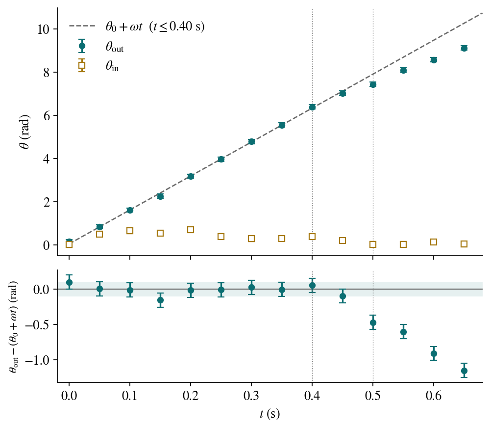

Important
This booklet is intended for graders. It contains complete solutions, uncertainty handling guidance, and a point-based rubric.

The figure shows the data of Table A1 with their uncertainties (\sigma_{\theta,\text{out}}=0.10\ \mathrm{rad}, \sigma_{\theta,\text{in}}=0.12\ \mathrm{rad}) and, below, the residuals \theta_{\text{out}}-(\theta_0+\omega t) from the early-time line. Three things stand out:
The outer end “learns” about the release between 0.45 and 0.50\ \mathrm{s} later; exercises 2 to 4 quantify it.
Fit \theta_{\text{out}}(t)=\theta_0+\omega t with constant \sigma_{\theta,\text{out}}=0.10\ \mathrm{rad}.
Result: \omega = (15.75 \pm 0.26)\ \mathrm{rad\,s^{-1}}, \qquad \theta_0 = (0.042 \pm 0.061)\ \mathrm{rad}.
Interpretation: the outer end follows uniform circular motion for a finite time after the inner end is released, consistent with finite propagation of the disturbance along the spring.
Fit \theta_{\text{out}}(t)=\theta_1+\omega_2 t using the last four points.
\omega_2 = (11.05 \pm 0.89)\ \mathrm{rad\,s^{-1}}.
Interpretation: after the collapse reaches the outer end, angular momentum is redistributed and dissipated (air drag + internal modes), decreasing the outer end’s angular speed.
Define t_c as the intersection of the two fitted lines.
t_c = \frac{\theta_1-\theta_0}{\omega-\omega_2} \approx \frac{1.961-0.042}{15.75-11.05} \approx 0.41\ \mathrm{s}.
Propagating the uncertainties of both fits: t_c = (0.41 \pm 0.04)\ \mathrm{s}.
Interpretation: this is an operational estimate of the time required for information about the release to travel from the inner end to the outer end.
\theta_{\text{in}}(t) departs rapidly from uniform rotation after release because the boundary condition changes instantly at the inner end. The inner end is directly accelerated by the spring’s reconfiguration, whereas the outer end responds only after signal propagation.
Fit: R_{\text{out}} = R_* + S\,\omega^2.
Weighted fit with \sigma_R=0.002\ \mathrm{m} yields: R_* = (0.05395 \pm 0.00161)\ \mathrm{m}, \qquad S = (8.518 \pm 0.067)\times 10^{-4}\ \mathrm{m}\,(\mathrm{s^2\,rad^{-2}}).
Dimensions. [M/K]=\mathrm{kg}/(\mathrm{N\,m^{-1}})=\mathrm{s^2}, while S, the slope of R_{\text{out}} (m) against \omega^2 (\mathrm{rad^2\,s^{-2}}), has units of \mathrm{m\,s^2} (radians are dimensionless). So S cannot be proportional to M/K alone: a length is needed, S\sim(\text{length})\times M/K, and the natural length of the problem is the rest radius R_*.
Simple model: all the mass at the end. A massless spring of constant K with a mass M at its end, which at rest lies at distance R_* from the axis. In the steady state the elastic force supplies the centripetal force: K\,(R_{\text{out}}-R_*) = M\omega^2 R_{\text{out}} \quad\Longrightarrow\quad R_{\text{out}}=\frac{R_*}{1-M\omega^2/K}\approx R_*+R_*\,\frac{M}{K}\,\omega^2 \quad (M\omega^2/K\ll 1), that is, S=R_*\,M/K.
Spring with distributed mass. If the mass is spread uniformly along the spring (rest length L_0, attached to the rotor of radius r_0, so that R_*=r_0+L_0), each element needs a centripetal force proportional to its radius, and for small extensions S=\Big(\frac{r_0}{2}+\frac{L_0}{3}\Big)\frac{M}{K}, that is, S=c\,R_*\,M/K with c between 1/3 (r_0\ll L_0) and 1/2 (L_0\ll r_0). In every case S=c\,R_*\,M/K, with c a geometric factor of order unity.
With the data. S/R_*=(1.58\pm0.06)\times10^{-2}\ \mathrm{s^2}. With c between 1/3 and 1, M/K\approx 0.016–0.047\ \mathrm{s^2} and \sqrt{M/K}\approx 0.13–0.22\ \mathrm{s}, of the same order as \bar t_c\approx 0.43\ \mathrm{s} (exercises 11 and 12): consistent with both quantities being set by the ratio M/K.
Approximations: linear spring (Hooke’s law) of uniform density; steady state (equilibrium in the rotating frame); gravity (droop \beta) and air drag (\alpha) neglected; and a small rotational extension, M\omega^2/K\ll 1. The last one does not hold over the range of Table B1: with the values of M/K above, M\omega^2/K\ge 1 already at 8\ \mathrm{rad\,s^{-1}}, and R_{\text{out}} reaches 7.3 times R_*. The linear law R_{\text{out}}=R_*+S\omega^2 describes the data well (\chi^2=5.8 for 5 degrees of freedom), but it should be read as an empirical description, and the value of M/K derived from S only as an order of magnitude.
Quadratic drag gives F_D\propto v^2\propto (\omega r)^2, motivating: \alpha \approx a + c\,\omega^2. A fit of \alpha vs \omega^2 is therefore expected to outperform \alpha vs \omega (smaller systematic residuals). A correct grading justification can be based on residual patterns even if students do not compute full model-selection statistics.
With the data of Table B1, the model \alpha=k\,\omega gives \chi^2=242 for 6 degrees of freedom (unacceptable), and the model \alpha=k\,\omega^2 gives \chi^2=8.8, with k=(0.0636\pm0.0008)^\circ\,\mathrm{s^2\,rad^{-2}}; a free fit \alpha\propto\omega^n gives n\approx 1.9. The quadratic model wins.
As \omega increases, typical tension increases (to provide centripetal acceleration), which suppresses out-of-plane sag. Thus \beta decreases with \omega: in Table B1 it goes from 19.5^\circ to 14.5^\circ between 8 and 20\ \mathrm{rad\,s^{-1}}, with a slope of (-0.39\pm0.07)^\circ/(\mathrm{rad\,s^{-1}}).
With equal uncertainties \sigma_{t_c}=0.01\ \mathrm{s}: \bar{t}_c \approx 0.426\ \mathrm{s}, \qquad \sigma_{\bar{t}_c}\approx \frac{0.01}{\sqrt{7}}\approx 0.0038\ \mathrm{s}.
So: \bar{t}_c = (0.426 \pm 0.004)\ \mathrm{s}.
The seven values are consistent with a constant t_c: \chi^2=0.97 for 6 degrees of freedom about the mean, and the slope of a linear fit against \omega, (-0.6\pm0.9)\times10^{-3}\ \mathrm{s^2\,rad^{-1}}, is consistent with zero.
For longitudinal waves in a stretched medium: c \sim \sqrt{\frac{T}{\lambda}},\qquad \lambda=\frac{M}{L}. A travel time estimate: t_c \sim \frac{L}{c}\sim L\sqrt{\frac{\lambda}{T}} \sim \sqrt{\frac{M}{K}}\sqrt{\frac{L}{\Delta L}}, and if \Delta L/L is order unity in the stretched state: t_c \sim C \sqrt{\frac{M}{K}}, with C order unity and geometry/tension-profile dependent.
Any of the following earns high credit if the student gives a testable prediction:
Linear–quadratic crossover: \mathbf{F}_D = -b_1 \mathbf{v} - b_2 |\mathbf{v}|\mathbf{v}. Prediction: \alpha vs \omega deviates from a pure \omega^2 line at low \omega (curvature).
Anisotropic drag: different coefficients for motion parallel/perpendicular to the local spring direction. Prediction: \alpha depends not only on \omega but also on the spring’s local orientation, increasing scatter unless corrected.
A strong answer:
The data of Table B1 cannot resolve it: the slope of t_c against \omega is consistent with zero (exercise 11).
Total: 40 points + 10 excellence points.
| Exercise | Points | Key elements |
|---|---|---|
| 1 | — | Plot of \theta_{\text{out}} and \theta_{\text{in}} with error bars; residuals |
| 2 | 6 | Correct linear fit, units, uncertainty |
| 3 | 4 | Second fit + interpretation of reduced \omega_2 |
| 4 | 6 | Correct intersection method + physical meaning |
| 5 | 3 | Coherent qualitative explanation |
| 6 | 7 | Plot, linear regression, uncertainties |
| 7 | 4 | Physical interpretation of intercept/slope |
| 8 | 4 | Dimensions + assumptions, S\propto R_*\,M/K |
| 9 | 4 | Model choice + physical justification |
| 10 | 2 | Correct tension/sag explanation |
| 11 | 4 | Weighted mean + uncertainty |
| 12 | 2 | Scaling argument to \sqrt{M/K} |
Excellence (10 points):
| Exercise | Points | What earns full credit |
|---|---|---|
| 13 | 5 | Improved drag law + explicit predicted change in plots/residuals |
| 14 | 5 | T(x) profile + c(x) argument + coherent \omega-dependence discussion |